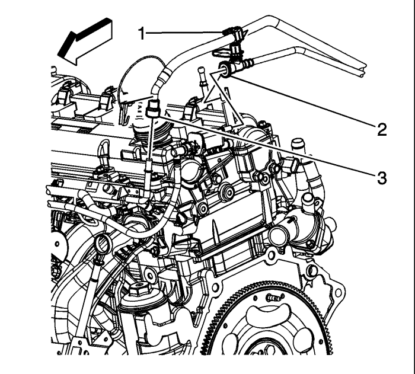
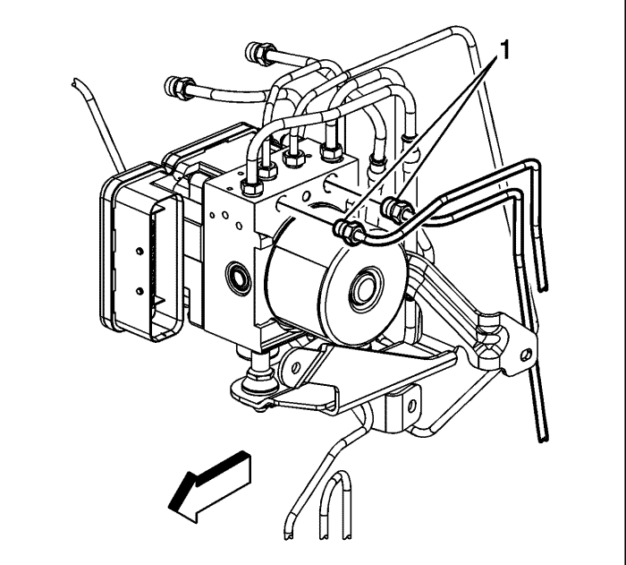
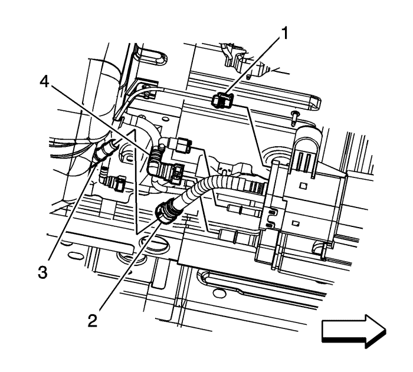
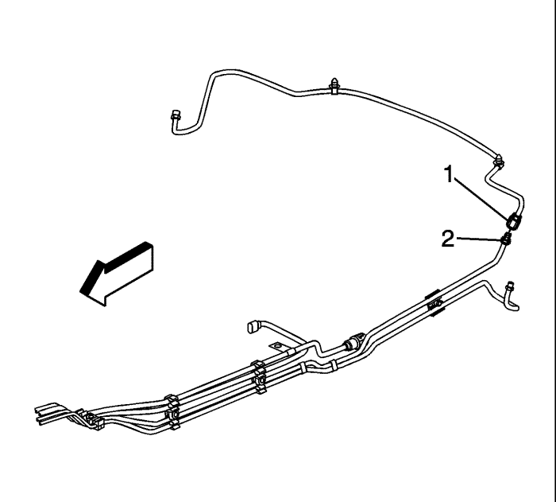
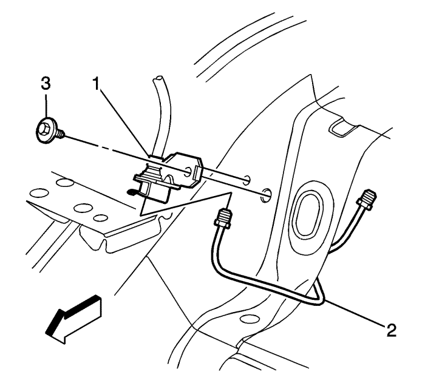
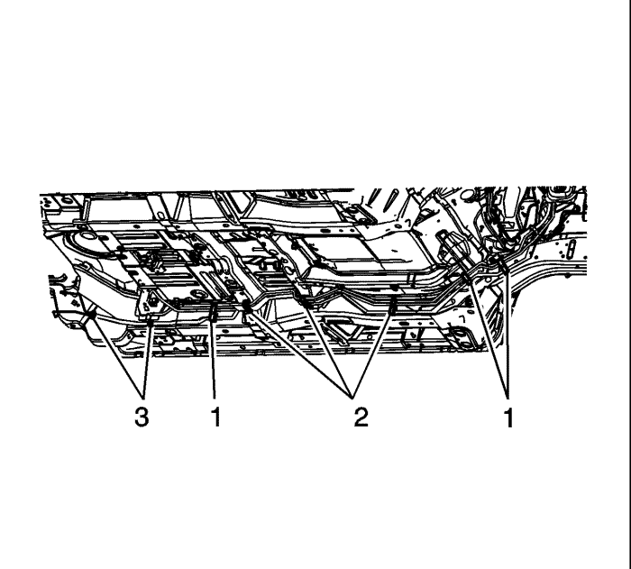
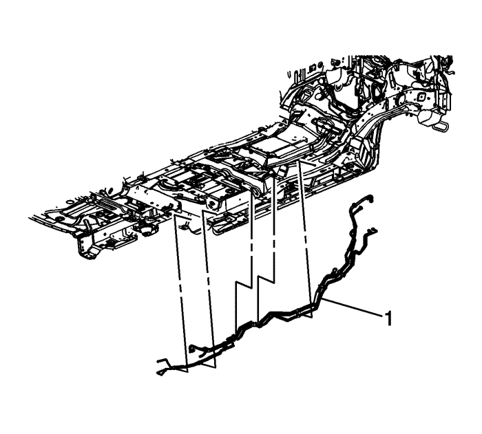
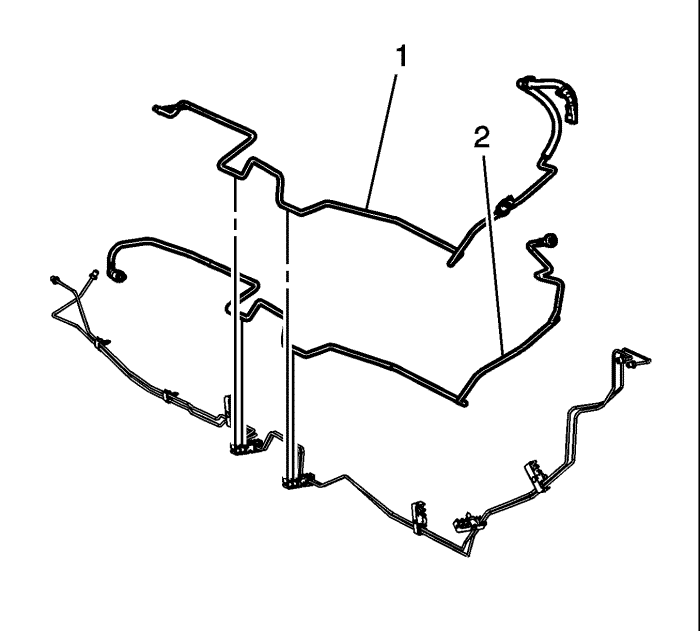

Sustitución de la tubería de emisión de vapor - Motor a chasis
Procedimiento de desmontaje
Advertencia : Asegúrese de que el vehículo se ha apoyado y encuadrado adecuadamente. Para evitar daños personales cuando el vehículo se ha levantado, proporciónele un apoyo adicional en el extremo opuesto a la parte de la que se extraen componentes.
Advertencia : No permita que nadie fume ni use llamas abiertas en la zona donde se esté trabajando con combustible o en el sistema EVAP. Cuando se esté haciendo cualquier trabajo en el sistema de combustible, desconecte el cable negativo de la batería, salvo en aquellas comprobaciones donde haga falta tensión de batería.
Advertencia : Siempre que se extraigan las tuberías de combustible, el combustible debe recogerse en un contenedor aprobado. La abertura del contenedor debe tener un diámetro mínimo de 300 mm (12 pulg.) para recoger el líquido adecuadamente.
Atención: Las tuberías de combustible/vapor no pueden empalmarse ni repararse. La tubería debe ser sustituida (si está dañada) por el mismo tipo de tubería.

- Despresurice el sistema de combustible. Consultar Descarga de la presión del combustible : Sin CH 48027-100 → CH 48027-100 .
- Desconecte el cable de batería negativo. Consultar Desconexión y conexión del cable de batería negativo .
- Retire el conducto de salida del purificador de aire. Consultar Sustitución del conducto de salida del filtro de aire : LE5 o LE9 .
- Desmonte la cubierta del colector de admisión. Consultar Sustitución de la cubierta del colector de admisión .
- Desconecte el acoplamiento rápido de la tubería de alimentación de combustible del chasis (3) del tubo de distribución de combustible. Consultar Reparación del acoplamiento rápido con collar metálico .
- Desconecte el adaptador de conexión rápida (2) de la tubería de emisión de vapor (EVAP) del chasis de la válvula solenoide de purga del depósito EVAP. Consultar Reparación del cierre rápido con collar de plástico .
- Retire el centro eléctrico situado bajo el capó, no equipado con LAT. Consultar Sustitución del bloque de unión o del centro eléctrico de la parte inferior del capó .
- Si está equipado con LAT, extraiga el depósito de expansión del refrigerante del motor. Consultar Sustitución del vaso de expansión del radiador : Diesel → Motores de gasolina .
- Extraiga el clip (1) de la tubería de alimentación de combustible del chasis del soporte de la tubería de combustible.

- Desmonte los adaptadores (1) del tubo de freno trasero de la válvula moduladora de presión de freno (BPMV).
- Tape los adaptadores de los tubos de freno y las bocas de salida del BPMV para evitar la contaminación y la pérdida de líquido de frenos.

- Desmonte el depósito de combustible. Consultar Sustitución del depósito de combustible : FWD (tracción delantera) → Tracción a las 4 ruedas .
- Desemborne el conector eléctrico del mazo de cables de la carrocería (1) del sensor de presión de combustible.

- Desconecte el adaptador de conexión rápida (1) de la tubería EVAP del chasis del depósito EVAP. Consultar Reparación del cierre rápido con collar de plástico .

- Desmonte el adaptador (2) del tubo de freno trasero del adaptador (1) de tubo de cruce del freno trasero.
- Tape los adaptadores del tubo del freno para evitar la pérdida de líquido de frenos y la contaminación.

- Desmonte el adaptador del tubo (2) de freno trasero del adaptador (1) de tubo flexible de freno trasero.
- Tape los adaptadores del tubo del freno para evitar la pérdida de líquido de frenos y la contaminación.

- Retire las fijaciones (1) de la tubería EVAP, de combustible y de freno de los bajos y del carril lateral.
- Retire las fijaciones (2) de la tubería EVAP, de combustible y de freno de los bajos y de los pernos.
- Extraiga las fijaciones (3) de la tubería de freno de los bajos y del carril lateral.

- Extraiga el conjunto de la tubería EVAP, de combustible y de freno (1) del vehículo.

- Extraiga la tubería EVAP del chasis (2) de las fijaciones.
Procedimiento de montaje
- Monte la tubería EVAP del chasis (2) en las fijaciones.
- Monte el conjunto de la tubería EVAP, de combustible y de freno (1) en el vehículo.
- Monte las fijaciones (1) de la tubería EVAP, de combustible y de freno en los bajos y en el carril lateral.
- Monte las fijaciones (2) de la tubería EVAP, de combustible y de freno en los bajos y en los pernos.
- Monte las fijaciones (3) de la tubería de freno en los bajos y en el carril lateral.
- Retire las caperuzas de los adaptadores de la tubería de freno.
Precaución: Consulte Precaución con las fijaciones en la sección Prólogo
- Monte el adaptador del tubo (2) de freno trasero en el adaptador (1) de tubo flexible de freno trasero.
Apretar
Apriete el adaptador a 18 N·m (13 lb. pie).
- Retire las caperuzas de los adaptadores de la tubería de freno.
- Monte el adaptador del tubo (2) de freno trasero en el adaptador (1) de tubo de cruce de freno trasero.
Apretar
Apriete el adaptador a 18 N·m (13 lb. pie).
- Conecte el adaptador de conexión rápida (1) de la tubería EVAP del chasis al depósito EVAP. Consultar Reparación del cierre rápido con collar de plástico .
- Emborne el conector eléctrico del mazo de cables de la carrocería (1) al sensor de presión de combustible.
- Monte el depósito de combustible. Consultar Sustitución del depósito de combustible : FWD (tracción delantera) → Tracción a las 4 ruedas .
- Quite los sombreretes y los tapones de los adaptadores de los tubos de frenos y de las bocas de salida del BPMV.
- Monte los adaptadores del tubo de freno trasero (1) en el BPMV.
Apretar
Apriete los adaptadores a 21 N·m (16 lb. pie).
- Conecte el acoplamiento rápido de la tubería de alimentación de combustible del chasis (3) al tubo de distribución de combustible. Consultar Reparación del acoplamiento rápido con collar metálico .
- Conecte el adaptador de conexión rápida (2) de la tubería EVAP del chasis a la válvula solenoide de purga del depósito EVAP. Consultar Reparación del cierre rápido con collar de plástico .
- Si está equipado con LAT, monte el depósito de expansión del refrigerante del motor. Consultar Sustitución del vaso de expansión del radiador : Diesel → Motores de gasolina .
- Monte el centro eléctrico situado bajo el capó, no equipado con LAT. Consultar Sustitución del bloque de unión o del centro eléctrico de la parte inferior del capó .
- Monte el clip (1) de la tubería de alimentación de combustible del chasis en el soporte de la tubería de combustible.
- Monte la cubierta del colector de admisión . Consultar Sustitución de la cubierta del colector de admisión .
- Monte el conducto de salida del filtro de aire. Consultar Sustitución del conducto de salida del filtro de aire : LE5 o LE9 .
- Conecte el cable negativo de la batería. Consultar Desconexión y conexión del cable de batería negativo .
- Utilice el siguiente procedimiento para comprobar si hay fugas:
| 23.1. | Ponga en ON el encendido con el motor apagado durante 2 segundos. |
| 23.2. | Poner el encendido en OFF durante 10 segundos. |
| 23.3. | Ponga en marcha el encendido con el motor apagado. |
| 23.4. | Compruebe si existen pérdidas de combustible. |
| © Copyright Chevrolet Europe. All rights reserved |